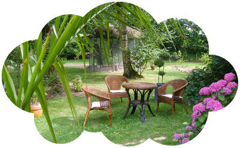

L'histoire commence en 2004 par quelques plantations au milieu d'une prairie.
Aujourd'hui on déambule entre les zones de cultures légumières et aromatiques, les vergers-poulailler, on se met à l'ombre des bouleaux

, frênes, sureau, on fait la sieste, on longe le parc des ânes et des biquettes, on s'arrête gratter leur museau, on passe devant la serre, les séchoirs, on hume l'odeur des plantes séchées, on prends le temps, on pique-nique sur une table de jardin.
Le Biau Jardin est un lieu de vie où se mêlent légumes, plantes aromatiques et fruitiers, lieu d'activités agricoles (Agriculture biologique et mention Nature et progrès) et d'accueil.
Il est situé en zone inondable sur une terre d'alluvion entre deux bras de la Loire, en limite de hameau, dans un paysage de prairies et champs ouverts, de haies de bords de rivière et de boires boisées.
PRODUITS PAYSANS
Suivant la saison.En vente sur place.
Ici on accepte la monnaie locale, la muse.
JUS DE FRUITS
jus de pomme, de raisin3€ le litre et 2,50€ la bouteille
TISANES
Hépatante, Indigène, Costaude, P'tit dèj, Anisée, Nuit étoilée, Inspiration 3€ le sachetPESTOS
Basilic, fenouil, persil 3,50€ le pot"CHAMPAGNES DES FEES"
surette, rosette 3€ la bouteilleVINAIGRE
de pommeACCUEIL PAYSAN
CHAMBRE D’HÔTE ET TABLE PAYSANNE
une chambre pour deux personnes (+ enfants possibles), équipée de toilettes sèches, 45€repas végétarien avec les produits du jardin 12€